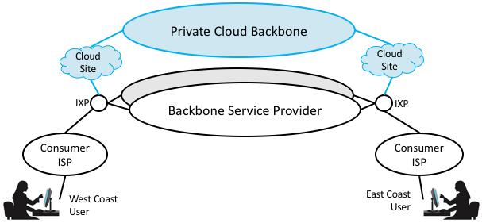

Perspective: The Cloud is Eating the Internet
The Cloud and the Internet are symbiotic systems. They were historically distinct, but today the line between them is increasingly fuzzy. If you start with the textbook definition, the Internet provides end-to-end connectivity between any two hosts (e.g., a client laptop and a remote server machine), and the cloud supports several warehouse-sized datacenters, each of which provides a cost-effective way to power, cool, and operate a large number of server machines. End-users connect to the nearest datacenter over the Internet in exactly the same way they connect to a server in a remote machine room.
That’s an accurate description of the relationship between the Internet and the Cloud in the early days of commercial cloud providers like Amazon, Microsoft, and Google. For example, Amazon’s cloud circa 2009 had two datacenters, one on the east coast of the US and one on the west coast. Today, however, each of the major cloud providers operates several dozen datacenters spread across the globe, and it should be no surprise that they are strategically located in close proximity to Internet Exchange Points (IXP), each of which provides rich connectivity to the rest of the Internet. There are over 150 IXPs worldwide, and while not every cloud provider replicates a full datacenter near each one (many of these sites are co-location facilities), it is fair to say the cloud’s most frequently accessed content (e.g., the most popular Netflix movies, YouTube videos, and Facebook photos) is potentially distributed to that many locations.
There are two consequences to this wide dispersion of the cloud. One is that the end-to-end path from client to server doesn’t necessarily traverse the entire Internet. A user is likely to find the content he or she wants to access has been replicated at a nearby IXP—which is usually just one AS hop away—as opposed to being on the far side of the globe. The second consequence is that the major cloud providers do not use the public Internet to interconnect their distributed datacenters. It is common for cloud providers to keep their content synchronized across distributed datacenters, but they typically do this over a private backbone. This allows them to take advantage of whatever optimizations they want without needing to fully inter-operate with anyone else.
In other words, while the figures in Section 4.1 fairly represents the Internet’s overall shape, and BGP makes it possible to connect any pair of hosts, in practice most users interact with applications running in the Cloud, which looks more like Figure 124. (One important detail that the figure does not convey is that Cloud providers do not typically build a WAN by laying their own fiber, but they instead lease fiber from service providers, meaning that the private cloud backbone and the service provider backbones often share the same physical infrastructure.)
{kind=link}

Figure 124. Cloud is widely distributed throughout the Internet with private backbones.
Note that while it is possible to replicate content across the cloud’s many locations, we do not yet have the technology to replicate people. This means that when widely dispersed users want to talk with each other—for example, as part of a video conference call—it’s the multicast tree that gets distributed across the cloud. In other words, multicast isn’t typically running in the routers of the service provider backbones (as Section 4.3 suggests), but it is instead running in server processes distributed across some subset of the 150+ locations that serve as the Internet’s major interconnection points. A multicast tree constructed in this way is called an overlay, which is a topic that we return to in Section 9.4.
Broader Perspective
To continue reading about the cloudification of the Internet, see Perspective: HTTP is the New Narrow Waist.
To learn more about the Cloud’s distributed footprint, we recommend How the Internet Travels Across the Ocean, New York Times, March 2019.